HippoCamera Knowledge Hub
Bite-sized memory science.
A knowledge hub embedded within HippoCamera, a smartphone app shown to improve memory for everyday events: short articles and guided activities on how memory changes with age, and how to look after it.
Knowledge Hub
A library, not a leaflet.
Articles and strategies of ten to fifteen minutes each, from the memory changes of older adulthood to the cue-based science behind HippoCamera itself. Readers choose what they need and go at their own pace.
Knowledge Hub
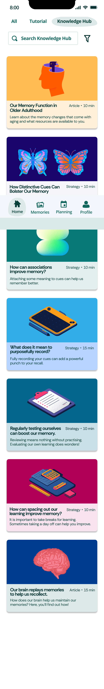
Articles and strategies
Memory in old age
It starts by saying what to expect.
Every article opens with an overview and a map of what it covers, so readers know where they are going before they start.
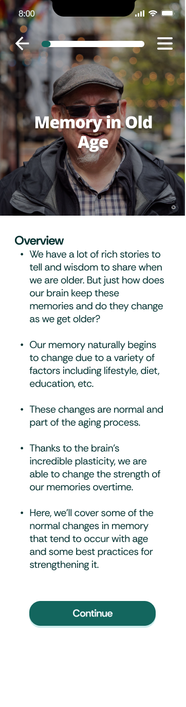
Article opener
What the article covers
Normal aging
Most forgetting is normal.
Misplaced keys, a name on the tip of the tongue, a word that will not come. The program names these for what they are: part of normal aging, and no cause for concern.
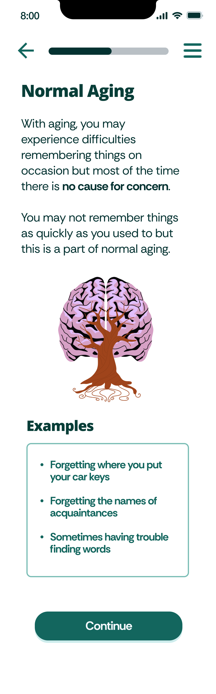
Normal aging
Should I be worried?
A guide, not a diagnosis.
One comparison carries the distinction. Forgetting where the car keys are is normal; forgetting how to drive is a sign of concern. Normal aging is mild and does not affect daily life. Dementia affects the ability to live independently.
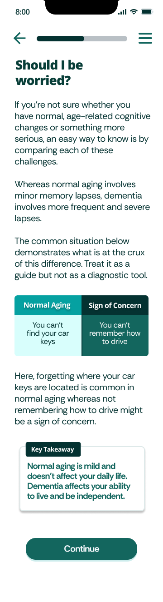
Normal aging vs sign of concern
The numbers
Figures that reassure rather than alarm.
Almost 40% of us will notice some memory loss after 65, yet only 5 to 8% of people over 60 might live with dementia. And not everything declines: speed and working memory fall with age, while world knowledge keeps growing.
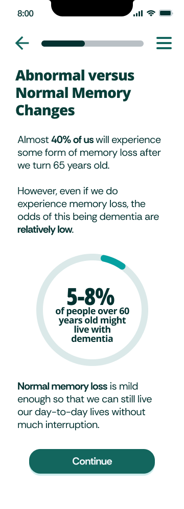
How common is dementia?
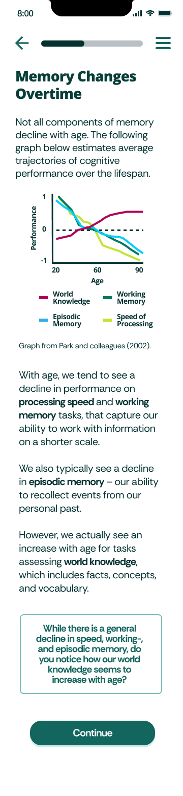
What changes with age
Maintaining memory
Four habits anyone can start.
Healthy diet, physical exercise, learning new things, staying socially active. Each is explained in a paragraph, with a reason to believe it.
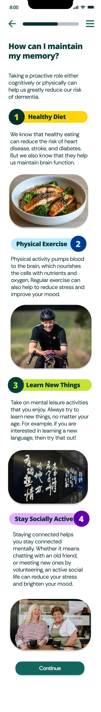
How can I maintain my memory?
Distinctive cues
Then it teaches the app itself.
HippoCamera asks people to record short cues for the moments they want to keep. The program explains why distinctive cues work, what makes a cue your own, and how to make one.
Why cues work
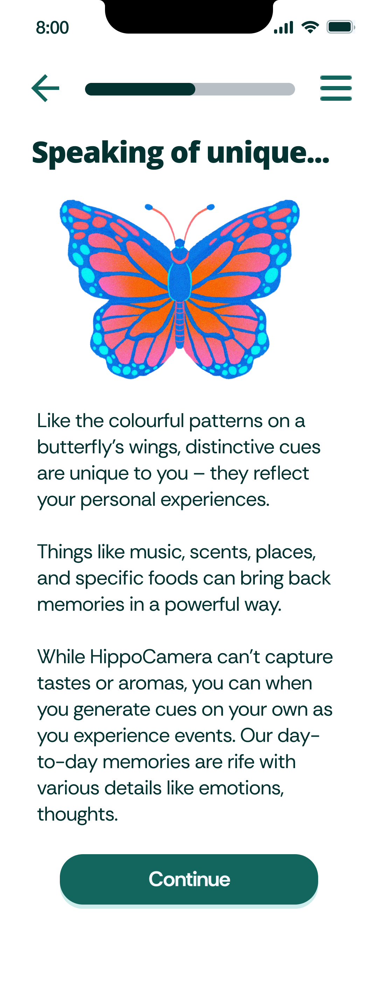
Unique to you
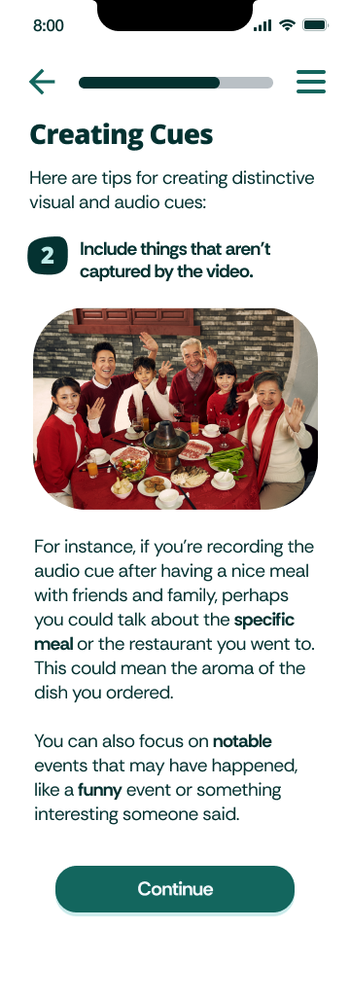
How to make one
Activity
Then it asks you to try.
A short video of a moment worth keeping, then a choice of cues to go with it. Readers practise picking the cue that captures the moment best.
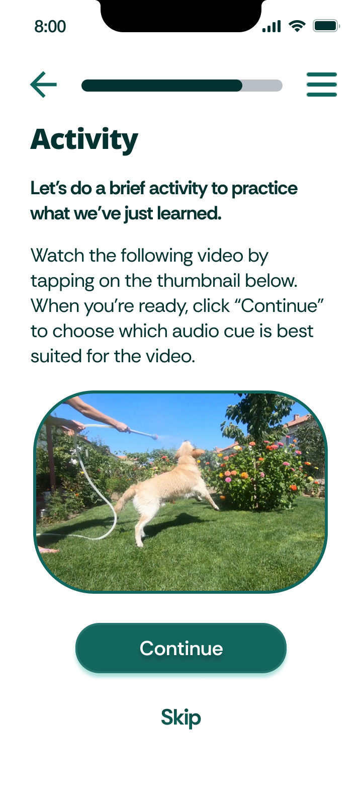
Watch, then choose
Check your understanding
Optional quizzes, instant feedback.
A scenario, three answers, and a response that explains why. Readers can answer or skip, and the feedback repeats the lesson rather than only marking it right or wrong.
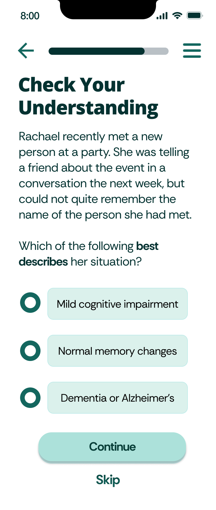
Scenario
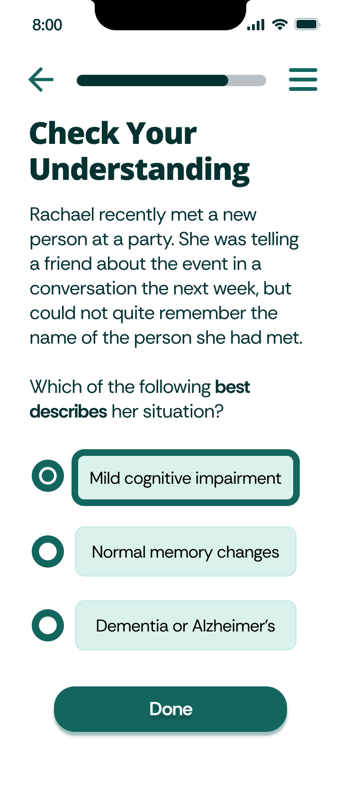
Choose an answer
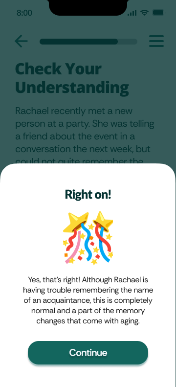
Feedback
Prototype
Try it yourself.
The program as an interactive Figma prototype. Tap through it the way a user would.
The study
Built from what older adults told us.
HippoCamera, a smartphone app shown to improve memory for everyday events, has driven requests for content explaining the science behind it. This project developed a complementary educational program covering key memory strategies, and interviewed older adults to identify what drives engagement with technology-based memory tools, informing how future interventions can be designed.
Screens designed by Darin Lei, in collaboration with Ever C. Hughes, Bryan Hong and Morgan D. Barense, and shaped by feedback from older adults in the Greater Toronto Area.